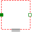

SupportSupport/housing flange of a one-dimensional translational component |
Information
This information is part of the Modelica Standard Library maintained by the Modelica Association.
This is a connector for 1-dim. translational mechanical systems and models the support or housing of a shaft. The following variables are defined in this connector:
s: Absolute position of the support/housing in [m]. f: Reaction force in the support/housing in [N].
The support connector is usually defined as conditional connector. It is most convenient to utilize it
- For models to be build graphically (i.e., the model is build up by drag-and-drop
from elementary components):
PartialOneFlangeAndSupport,
PartialTwoFlangesAndSupport.
- For models to be build textually (i.e., elementary models):
PartialElementaryOneFlangeAndSupport,
PartialElementaryTwoFlangesAndSupport,
PartialElementaryRotationalToTranslational.
Used in Components (9)
|
Modelica.Electrical.Analog.Basic Electromotoric force (electric/mechanic transformer) |
|
|
Modelica.Magnetic.FluxTubes.Interfaces Base class for flux tubes with reluctance force generation; constant permeability |
|
|
PartialElementaryRotationalToTranslational Modelica.Mechanics.Rotational.Interfaces Partial model to transform rotational into translational motion |
|
|
Modelica.Mechanics.Translational.Interfaces Partial model for a component with one translational 1-dim. shaft flange and a support used for graphical modeling, i.e., the model is build up by drag-and-drop from elementary components |
|
|
Modelica.Mechanics.Translational.Interfaces Partial model for a component with two translational 1-dim. shaft flanges and a support used for graphical modeling, i.e., the model is build up by drag-and-drop from elementary components |
|
|
PartialElementaryOneFlangeAndSupport Modelica.Mechanics.Translational.Interfaces Obsolete partial model. Use PartialElementaryOneFlangeAndSupport2. |
|
|
PartialElementaryOneFlangeAndSupport2 Modelica.Mechanics.Translational.Interfaces Partial model for a component with one translational 1-dim. shaft flange and a support used for textual modeling, i.e., for elementary models |
|
|  |
PartialElementaryTwoFlangesAndSupport Modelica.Mechanics.Translational.Interfaces Obsolete partial model. Use PartialElementaryTwoFlangesAndSupport2. |
|
PartialElementaryTwoFlangesAndSupport2 Modelica.Mechanics.Translational.Interfaces Partial model for a component with one translational 1-dim. shaft flange and a support used for textual modeling, i.e., for elementary models |